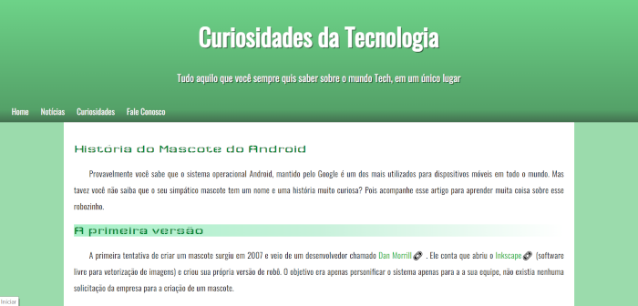
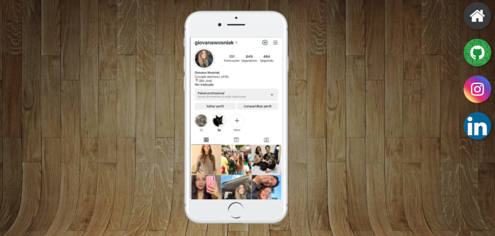
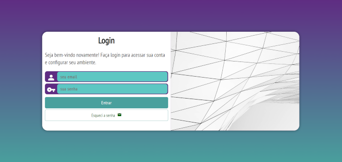

Mini-projeto criado com o objetivo de praticar diferentes maneiras de projeção de background, incluindo o efeito parallax.
Site criado para aplicação de conceitos de redimensionamento de imagens para diferentes telas.
Mini-projeto realizado para prática de iframe e ancoragem de páginas.
Mini-projeto de página de login, realizada para prática de formulários.